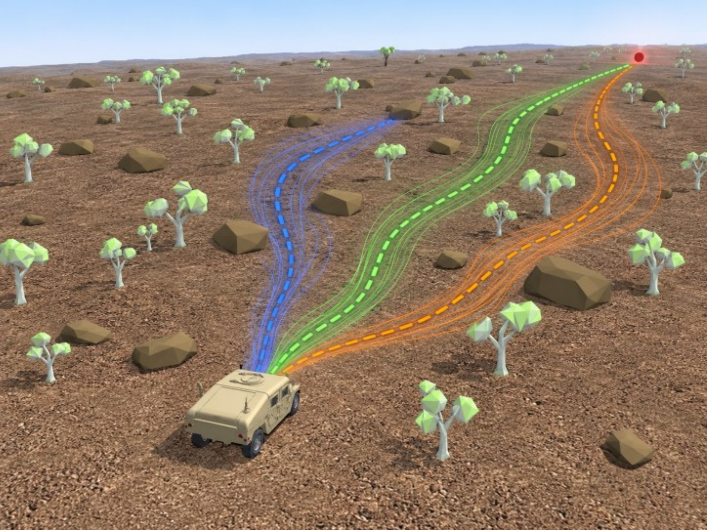
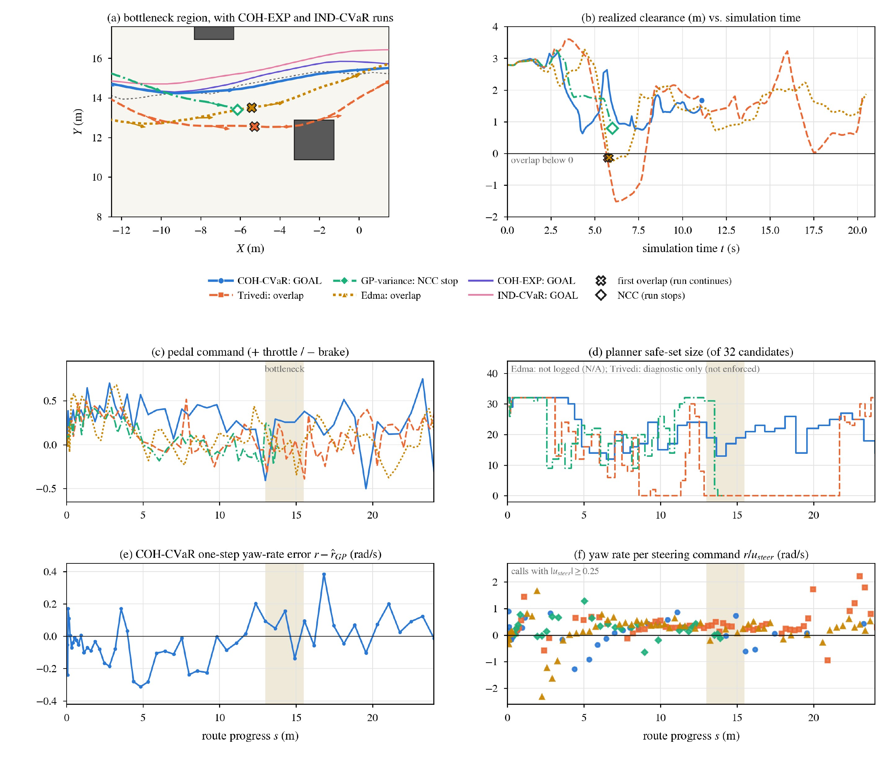

Supplementary Video
Research overview
Off-road vehicles must make progress around obstacles despite terrain-dependent dynamics that are difficult to predict. A Gaussian process (GP) residual model learns corrections to nominal dynamics online and represents remaining model uncertainty. Prediction errors can persist and accumulate during a maneuver; independently sampling residuals at successive prediction steps can misrepresent this dependence and distort trajectory-level obstacle risk.
We combine model predictive path integral control (MPPI) with coherent GP posterior-function sampling. Each sampled dynamics function remains consistent throughout a predicted trajectory, allowing the controller to evaluate obstacle-clearance shortfall across plausible dynamics. The GP is updated passively from observed transitions; the controller does not use active information-gathering actions.
Method overview

At each control step, terrain-conditioned GP residual models are updated from observed vehicle transitions. MPPI generates candidate control sequences, and posterior-mean trajectories determine navigation costs and initial eligibility. When posterior risk evaluation is activated, sampled residual functions are held fixed over the prediction horizon and shared as posterior worlds across admitted candidates. Batched GPU rollouts evaluate obstacle-clearance shortfall along each trajectory.
For each world, the trajectory loss is its maximum obstacle-clearance shortfall. The controller aggregates these losses using either their expectation or conditional value at risk (CVaR), which emphasizes the upper tail. This risk term augments the task cost used to calculate MPPI weights. Feasibility-aware action selection, fallback selection, and a final posterior-mean collision check determine the action that is applied.
Random Fourier features provide an efficient finite-dimensional approximation for GP function sampling; Matheron's rule incorporates the current observations into the posterior function realizations.
Why coherent sampling matters
A GP posterior represents uncertainty over dynamics functions. Stepwise-independent sampling draws a new residual at each prediction step, whereas coherent sampling evaluates one sampled function consistently across the trajectory. A persistent model error can accumulate over a maneuver differently from independent errors, affecting predicted trajectory uncertainty and obstacle risk.
Coherent sampling does not necessarily increase every risk estimate or always yield a more conservative action. What matters for MPPI is how risk changes relative to other candidates: a difference shared equally by all candidate costs does not change their normalized weights.
Key contributions
- Coherent GP posterior-function sampling for multi-step dynamics uncertainty in risk-aware MPPI.
- Trajectory-level obstacle risk, selective candidate evaluation, and feasibility-aware control selection.
- Simulation-based navigation comparisons and matched analyses tracing uncertainty propagation through risk, weights, and control decisions.
Experimental setup
We evaluate simulated obstacle avoidance and goal reaching in Verti-Bench / Project Chrono using a high-fidelity multibody HMMWV model on Dirt, Grass, and Concrete. The controller uses online terrain-conditioned GP residual learning and a GPU-based MPPI implementation. Terrain and obstacle geometry and the relevant terrain labels are available in the evaluated setting; the study addresses uncertainty in dynamics rather than perception or mapping. These are simulation experiments, not physical-robot validation.
Experimental results
Overall navigation performance
Across 180 trials per controller, COH-CVaR reached the goal without collision in 130 trials, 20 more than the strongest external baseline (an 11.1 percentage-point difference). These are comparisons of complete, independently configured controllers. The external methods are benchmark adaptations; the full difference cannot be attributed to coherent sampling alone.
| Method | Collision-free goal reaching |
|---|---|
| COH-CVaR (proposed) | 130/180 (72.2%) |
| COH-EXP | 125/180 (69.4%) |
| Trivedi-based baseline | 110/180 (61.1%) |
| GP-variance | 81/180 (45.0%) |
| Edma-based baseline | 73/180 (40.6%) |
COH-CVaR recorded two collisions. Its mean controller computation time was 68.6 ± 6.6 ms at a 10-Hz control rate, with 0.03% of cycles exceeding 100 ms.
Matched ablation: coherent and independent sampling
| Risk configuration | Coherent sampling | Independent sampling |
|---|---|---|
| CVaR | 130/180 | 118/180 |
| Expected maximum shortfall | 125/180 | 123/180 |
Within each risk configuration, controller settings, GP learning protocols, scenarios, and seed identities are matched. Under CVaR, coherent sampling achieved 12 additional successes and 13 fewer no collision-free candidate (NCC) terminations; both schemes recorded two collisions. The difference under expected maximum shortfall was smaller. The main ablation changes both temporal and cross-candidate sampling dependence. CVaR and expectation were tuned separately, so their results are not a controlled comparison of risk measures.
Representative navigation example


In this example, the coherent controller reaches the goal, the GP-variance controller terminates without a collision-free candidate among those evaluated, and the Trivedi- and Edma-based controllers encounter geometric overlap. NCC does not establish that no feasible trajectory exists.
From trajectory risk to control decisions
Changing uncertainty propagation can alter candidate risk estimates and their relative MPPI weights, which in turn changes the weighted control sequence. A final action can still follow a different selection branch: feasibility checks and fallback selection may override the weighted sequence. Thus, changes in predicted risk need not translate directly into changes in the executed input.
In the same-state replay shown in the supplementary video, differences exceeded the reported comparison thresholds in 79.5% of recorded planning calls for candidate risk, 54.1% for MPPI weights, and 12.6% for the committed first control input. The replay holds the GP data, candidates, navigation costs, and selection logic fixed across ten obstacle layouts.
Discussion and limitations
Validation is simulation-based. Grass remains challenging, and NCC terminations remain a major failure mode. The observed benefit of coherent sampling depends on the evaluated risk configuration; the method does not guarantee collision-free navigation under all model uncertainties.